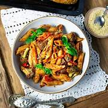

Arrabbiata Pasta

Why it’s called “Arrabbiata”
“Arrabbiata” means angry in Italian — because of the spicy kick
Ingredients
- 1 cup penne pasta
- 2 tbsp olive oil
- 3–4 garlic cloves (chopped)
- 1–2 tsp red chili flakes
- 1 cup tomato puree / crushed tomatoes
- Salt (to taste)
- Fresh basil (optional)
- Parmesan cheese (optional)
Steps
- Cook pasta in salted water until al dente. Save a little pasta water.
- Heat olive oil → add garlic → sauté lightly (don’t burn).Add chili flakes → cook 20–30 sec.
- Pour tomato puree + salt → cook 8–10 min till thick.
- Add pasta + a splash of pasta water → mix well.
- Add basil + cheese (optional).
Quick Tips
- Use more chili flakes if you like it spicy
- Don’t overcook garlic (it turns bitter)
- Pasta water makes sauce silky
Home